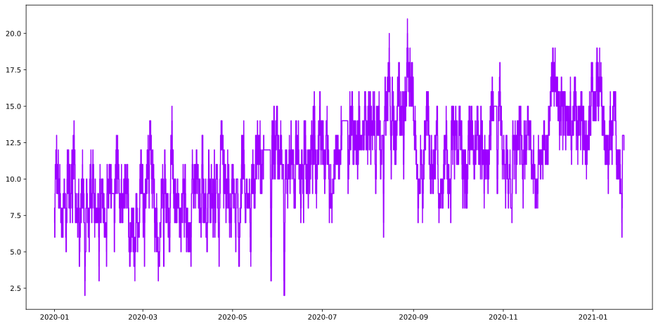
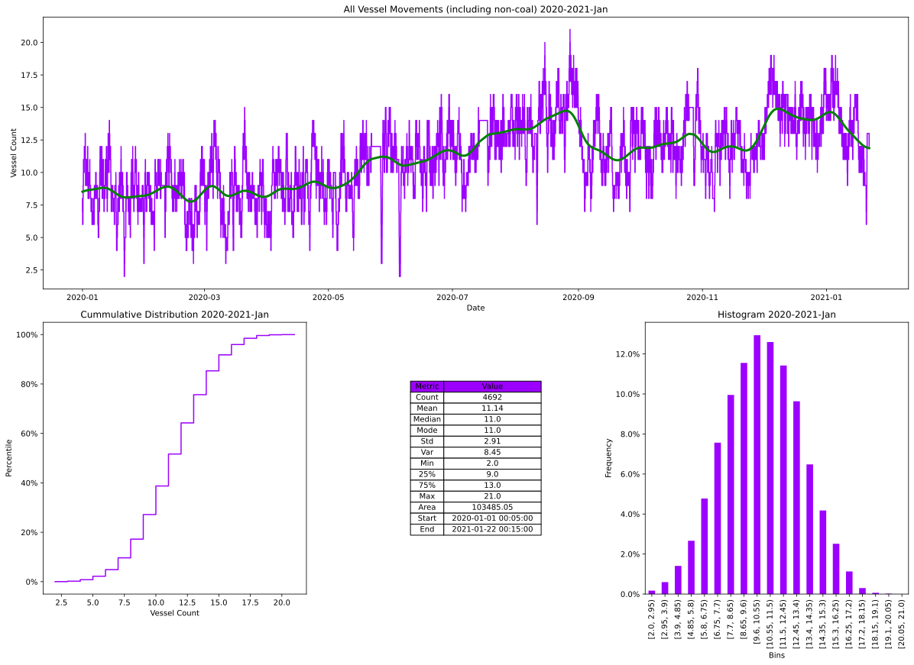

none
[1]:
ipython3
import sys
sys.path.insert(0, r"..//..//")
import matplotlib.pyplot as plt
import numpy as np
import pandas as pd
from hotstepper.Steps import Steps
from hotstepper.Step import Step
import warnings
warnings.filterwarnings("ignore")
none
[18]:
ipython3
dformat = '%d/%m/%Y %H:%M'
df_vessel_movement= pd.read_csv(r'..//..//data//vessel movements_grouped.csv',parse_dates=True)
df_vessel_movement = df_vessel_movement.sort_values(by=['in'])
df_vessel_movement['in'] = df_vessel_movement['in'].apply(lambda x: pd.to_datetime(x, format=dformat))
df_vessel_movement['out'] = df_vessel_movement['out'].apply(lambda x: pd.to_datetime(x, format=dformat))
df_vessel_movement['remove'] = df_vessel_movement['remove'].apply(lambda x: pd.to_datetime(x, format=dformat))
df_vessel_movement = df_vessel_movement.sort_values(by=['in'])
#df_vessel_movement = df_vessel_movement[df_vessel_movement.BERTH.isin(['D4','D5','K4','K5','K6','K7','K8','K9','K10'])]
#df_vessel_movement['indate'] = pd.to_datetime(df_vessel_movement['in']).dt.date
#df_vessel_movement['outdate'] = pd.to_datetime(df_vessel_movement['out']).dt.date
df_vessel_movement.tail()
none
[18]:
| visit_id | vessel_name | in | out | remove | FLAG | BERTH | GRT(MSB) | LOA | AFT DRAFT | P/E | AGENT | TUGCO | NO OF TUGS | |
|---|---|---|---|---|---|---|---|---|---|---|---|---|---|---|
| 15 | 357632 | K PHOENIX | NaT | 2020-01-01 00:05:00 | NaT | PA | K8 | 75264 | 269.4 | 15.01 | C | WSS | SV | 4 |
| 42 | 357686 | STAR AMETHYST | NaT | 2020-01-01 17:00:00 | NaT | BS | K7 | 42980 | 229.0 | 13.78 | H | MON | SV | 3 |
| 51 | 357706 | ART | NaT | 2020-01-01 13:18:00 | NaT | 0 | K9 | 90086 | 288.9 | 15.26 | H | LBH | SV | 4 |
| 70 | 357735 | ORIENT MATE | NaT | 2020-01-04 15:50:00 | NaT | LR | W3 | 22888 | 180.9 | 6.48 | C | MON | SV | 2 |
| 71 | 357737 | ELSA OLDENDORFF | NaT | 2020-01-09 06:00:00 | 2020-01-05 13:00:00 | MT | D2 | 25431 | 179.9 | 9.00 | C | MON | SV | 1 |
none
[19]:
ipython3
vessel_movement_steps = Steps.read_dataframe(df_vessel_movement, start='in',end='out')
vessel_movement_steps.plot()
none
[19]:
<AxesSubplot:>

none
[21]:
ipython3
# [steps_plot_ax,
# ecdf_plot_ax,
# statistics_table_ax,
# histogram_plot_ax
# ]
plot_params = {
'ecdf_plot': {'color':"#004c97"},
'steps_plot': {'color':"#004c97"},
'smooth_steps_plot': {'color':"#3e3e40"},
'histogram_plot': {'color':"#004c97", 'label_style':'t'},
'table_plot': {'color':"#004c97"},}
axess = vessel_movement_steps.summary()
axess[0].set_title('All Vessel Movements (including non-coal) 2020-2021-Jan')
axess[0].set_xlabel('Date')
axess[0].set_ylabel('Vessel Count')
axess[1].set_title('Cummulative Distribution 2020-2021-Jan')
axess[1].set_ylabel('Percentile')
axess[1].set_xlabel('Vessel Count')
axess[3].set_title('Histogram 2020-2021-Jan')
axess[3].set_xlabel('Bins');
axess[3].set_ylabel('Frequency');

none
[ ]:
ipython3